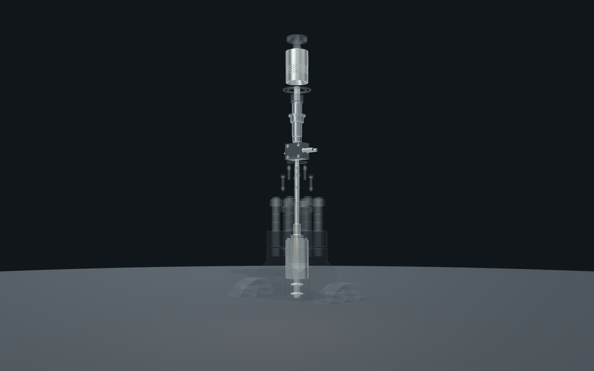

01 / THE CORE
精密，先从
核心被看见。
沿滚动查看内部结构如何沿同一条轴线展开、归位与闭合。
向下探索结构CONTROL VALVE / 01
让每一层结构，
回到同一条轴线。
这段产品叙事将视线从核心移向内件、阀体与执行器。它呈现的是镜头中的几何关系，而不是制造、维护、流向或性能说明。
浏览产品目录STRUCTURE / 02
看见结构的秩序。
- 01核心
从完整轴线推入可见的核心。
- 02内件
四个几何岛沿镜头轴线依次归位。
- 03阀体
外部结构闭合，保留对核心位置的阅读。
- 04整体
执行器落座，结构成为同一台设备。
NEXT / 03